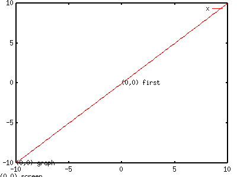
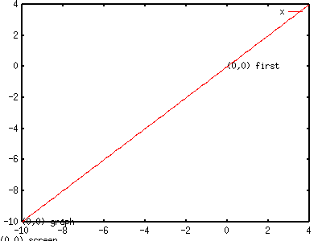
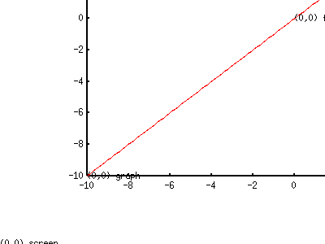
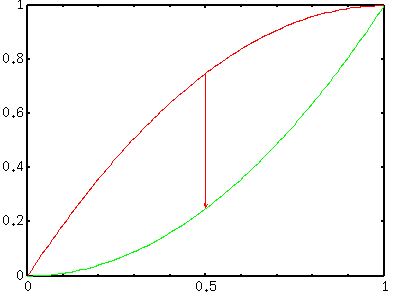

<!DOCTYPE HTML PUBLIC "-//W3C//DTD HTML 4.01 Transitional//EN">
<html lang="ja">
<head>
<title> gnuplot / label (2) </title>
<!-- Generated 1999/ 9/28 -->
<!-- $Id: label2.html,v 1.12 2004/12/17 07:33:39 kawano Exp $ -->
<meta http-equiv="content-type" content="text/html;charset=iso-2022-jp">
<link rel="stylesheet" href="style-new.css" type="text/css">
</head>
<body>

<table width="100%" border="0" cellpadding="0" cellspacing="0">
<tr><td bgcolor="#cccc90" width="320">
    <div align="left">
    <a href="index.html">
    
    </a></div></td>
    <td bgcolor="#cccc90">
      <div align="center"><h3> - not so Frequently Asked Questions - </h3> </div>
      <div class="update"> update 2004/9/5 </div>
    </td>
</tr>
<tr><td bgcolor="#fae8ba"></td>
    <td bgcolor="#fae8ba"><div class="navi"> 
<a href="index.html">           HOME </a> |
<a href="intro/index.html">     INTRODUCTION </a> |
<a href="general.html">         INFORMATION </a> |
<a href="gallery/index.html">   GALLERY </a> |
<a href="label2-e.html">        ENGLISH </a>
</div></td></tr>
</table>
<hr class="topsep">


<table width="100%" border="0" cellpadding="0" cellspacing="0">
<tr><td id="menu">
 <p> not so FAQ</p>
  <ul>
    <li><a href="legend.html">      $BK^Nc(B(Legend) </a>
    <li><a href="tics.html">        $BL\@9(B(Tics) </a>
    <li><a href="label.html">       $B%i%Y%k(B(Label) </a>
    <ul>
      <li><a href="label.html#4.1">
           $B>eIU$-!&2<IU$-E:;z(B </a>
      <li><a href="label.html#4.2">
           $B%.%j%7%cJ8;z(B </a>
      <li><a href="label.html#4.3">
           $B4V3V$ND4@0(B </a>
      <li><a href="label2.html#4.4">
           $B%i%Y%k$N:BI8$O(B </a>
      <li><a href="label2.html#4.5">
           $BLp0u(B </a>
      <li><a href="label3.html#4.6">
           $B%i%Y%k$N?'(B  </a> 
          <a href="version.html"><b>[ver.4]</b></a>
      <li><a href="label3.html#4.7">
           Y$B<4$N8~$-(B </a>
    </ul>
    <li><a href="plot1.html">       2$B<!85%W%m%C%H(B </a>
    <li><a href="plot3d.html">      3$B<!85%W%m%C%H(B </a>
    <li><a href="polar.html">       $B6K:BI8%W%m%C%H(B </a>
    <li><a href="parametric.html">  $BG^2pJQ?tI=<((B </a>
    <li><a href="datafile.html">    $B%G!<%?%U%!%$%k$N?tCM(B </a>
    <li><a href="postproc.html">    $B?^$rIA$$$?$=$N8e$O(B</a>
    <li><a href="misc1.html">       $B$=$NB>(B </a>
  </ul>
 <br>
</td>


<td id="content">
<h1><a name="top"> $B%i%Y%k$"$l$3$l(B  ($B$=$N(B2)</a></h1>

<div align="center">
<a href="label.html">  1 </a> | 
<a href="label2.html"> 2 </a> | 
<a href="label3.html"> 3 </a>
</div>


<h2><a name="4.4">$B%i%Y%k$rI=<($9$k$H$-$N:BI8$O!)(B</a></h2>

<p> gnuplot$B$G$O!$%0%i%U$KG$0U$ND>@~!&Lp0u!&J8;zNs$r=q$-9~$`$H$-$N0LCV(B
$B$dK^Nc$N0LCV$rI=$9$N$K!$(B4$B$D$N:BI87O$,;H$o$l$^$9!%$3$l$i$O!$(B"first",
"second", "graph", "screen"$B!$$H8F$P$l!$$=$l$>$l!$%0%i%U$N:8$N(BY$B:BI8$H2<(B
$B$N(BX $B:BI8!$1&$N(BY2$B:BI8$H>e$N(BX2$B:BI8!$%0%i%UFbIt$NAjBPE*$J0LCV!$2hLLFb$NAj(B
$BBPE*$J0LCV$rI=$7$F$$$^$9!%:BI87O$r;XDj$7$J$$$H$-$O(Bfirst$B$N:BI87O!$$D$^(B
$B$j?^$N(BY$B<4$,;H$o$l$^$9!%:BI87O$r;XDj$9$k$H$-$O!$(Bx,y$B:BI8$rM?$($k$H$-$K!$(B
<tt> graph x, screen y </tt> $B$NMM$K!$;H$&:BI87O$rA0$KCV$-$^$9!%(B</p>

<p>$B4JC1$J%F%9%H$r$7$F$_$^$7$g$&!%3F!9$N:BI87O$N86E@$K$J$k=j$KJ8;z$r(B
$B=q$$$F$_$^$9!%(B</p>

<pre class="sample">
gnuplot&gt; set label "(0,0) first"  at first  0, first  0
gnuplot&gt; set label "(0,0) graph"  at graph  0, graph  0
gnuplot&gt; set label "(0,0) screen" at screen 0, screen 0
</pre>


<p> $B:G=i$N%i%Y%k(B("first")$B$O!$?^$NCf1{IU6a$K$"$k<4$N86E@$KCV$+$l$^$9!%(B
$B%W%m%C%H$N?tCM$H:BI87O$,0lCW$7$F$$$k$N$G!$?^$KLp0u$d%3%a%s%H$rIA$-9~$`(B
$B$H$-$KJXMx$G$9!%(B"graph"$B$N86E@$O!$OH@~(B(border)$B$N:82<$N%3!<%J!<$K$J$C$F(B
$B$$$^$9!%1&>e$N%3!<%J!<$,(Bgraph$B:BI87O$N(B(1,1)$B$K$J$j$^$9!%?^Cf$N0LCV$rAjBP(B
$BE*$K7hDj$7$FM?$($?$$$H$-$K;H$$$^$9!%Nc$($P!$(Bgraph 0.5, graph 0.5 $B$J$i(B
$B>o$KOH$NCf1{$K$J$j$^$9!%(B"screen"$B$OI=<(2hLL$N:82<$G!$0lIt2hLL30$K=P$F$7(B
$B$^$C$F$$$^$9!%2hLL$N1&>e$,(Bscreen$B$G$N(B(1,1)$B$G$9!%%W%m%C%H$NBg$-$5$K4X78(B
$B$J$/2hLLA4BN$KBP$9$kAjBPE*$J0LCV$r7h$a$k$N$K;H$$$^$9!%(B</p>
<br clear="all">

<p>first$B$N:BI87O$G;X<($7$?%i%Y%k$O!$?^$N(BXY$B<4$N?tCM$,JQ$o$l$P$=$l$KH<$C$F(B
$B0LCV$,JQ2=$7$^$9!%$=$NB>$N%i%Y%k$N0LCV$O!$<4$N?tCM$GJQ$o$j$^$;$s!%(B</p>

<pre class="sample">
gnuplot&gt; set xrange [-10:4]
gnuplot&gt; set yrange [-10:4]
gnuplot&gt; replot
</pre>

<div align="center"></div>


<p>$B?^A4BN$r1&>e$K$:$i$7$F$_$^$7$g$&!%?^$N86E@$rJQ$($k$K$O(B<tt> set
origin </tt> <i> x,y </i>$B$r;H$$$^$9!%$3$N(Bx,y$B:BI8$O(B"screen"$B:BI87O$GM?$((B
$B$^$9!%A4BN$r(B20%$B$E$D1&>e$K$:$i$9$K$O!$<!$N$h$&$K$7$^$9!%(B</p>

<pre class="sample">
gnuplot&gt; set origin 0.2,0.2
gnuplot&gt; replot
</pre>


<p>screen$B$GM?$($k86E@$O>o$K:82<$G$9$,!$(Borigin$B$rJQ$($k$H(Bgraph$B$N86E@$,0\(B
$BF0$7$^$9!%(B</p>
<br clear="all">


<div class="top"><a href="label2.html#top"></a></div>
<h2><a name="4.5">$B?^Cf$KLp0u$rIA$-9~$_$?$$!%(B</a></h2>

<p>$B?^$NCf$K@bL@$N$?$a$NLp0u$rIA$-9~$`$3$H$,$h$/$"$j$^$9!%(Bgnuplot$B$G$O!$(B
<tt>set arrow </tt>$B$r;H$C$FLp0u$d@~J,$r:n@.$7$^$9!%0lHV4JC1$JNc$O!$(B
<tt>set arrow from 1,2 to 2,4 </tt>$B$NMM$J=q$-J}$G!$(B(1,2)$B$H$$$&:BI8$+$i(B
(2,4)$B$K8~$+$&Lp0u$,I=<($5$l$^$9!%$3$N(B<a href="label2.html#4.4">$B:BI8(B</a>$B$O!$2?$b;X(B
$BDj$7$J$1$l$P(Bfirst$B$N:BI87O$K$J$j!$(BX$B<4(BY$B<4$NL\@9$K0MB8$7$^$9!%>o$KF1$80L(B
$BCV$KLp0u$rCV$/$K$O!$(B<a href="label2.html#4.4">graph$B$d(Bscreen$B:BI87O(B</a>$B$G:BI8$rM?$((B
$B$^$9!%(B</p>

<p> arrow$B$rDj5A$9$k$?$S$K!$(Bgnuplot$B$O$=$l$>$l$NLp0u$K=gHV$KHV9f$r$U$C$F(B
$B$$$-$^$9!%:G=i$KDj5A$5$l$?Lp0u$N%?%0$,(B1$B!$$=$N<!$,(B2$B!$$H$$$&Iw$K$J$C$F$*$j!$(B
$B$3$NHV9f$O!$8e$GLp0u$r:FDj5A$9$k>l9g$d>C5n$9$k>l9g$K;H$o$l$^$9!%(B
$B$3$N$"$?$j$NDj5AJ}K!$O!$(B<tt>set label</tt>$B$HA4$/F1$8$G$9!%(B</p>

<pre class="sample">
gnuplot&gt; set arrow from 0,0 to 1,1
gnuplot&gt; set arrow from 0,0 to 1,2
gnuplot&gt; set arrow from 0,0 to 1,3
</pre>

<p>$B$3$NMM$K(B3$B$D$NLp0u$rDj5A$9$k$H!$86E@$+$i(B(1,1)$B$K8~$+$&Lp0u$,(B1$BHV!$(B
(1,2)$B$K8~$+$&$N$,(B2$BHV$K$J$j$^$9!%(B2$BHV$NLp0u$r>C$7!$(B3$BHV$NLp0u$N=*E@$r(B
(1,5)$B$KJQ$($k$K$O<!$N$h$&$K$7$^$9!%(B</p>

<pre class="sample">
gnuplot&gt; set noarrow 2
gnuplot&gt; set arrow   3 to 1,5
</pre>

<p>$B:G=i$NDj5A$N;~$K!$(B<tt> set arrow 1 </tt>$B$N$h$&$K%f!<%6$,D>@\%?%0$H(B
$B$J$kHV9f$rM?$($k$3$H$b$G$-$^$9!%$3$A$i$NJ}K!$NJ}$,4V0c$$$,>/$J$$$+$b$7(B
$B$F$^$;$s!%Dj5A$7$?Lp0u$O(B<tt>show arrow </tt>$B$G3NG'$9$k$3$H$,$G$-$^$9!%(B
$B$J$*!$(B<tt> nohead </tt>$B$N%-!<%o!<%I$rIU$1$k$H!$=*E@$K$/Lp$8$j$,IA$+$l(B
$B$:!$C1=c$J@~J,$K$J$j$^$9!%$^$?!$(B<tt>lw (linewidth)</tt>$B$d(B<tt>ls
(linestyle)</tt>$B$N%-!<%o!<%I$G!$@~J,$NB@$5$d@~<o$rJQ$($k$3$H$b$G$-$^$9!%(B
</p>

<p>$B4X?t$r%W%m%C%H$9$k$H$-$K!$%3%a%s%H$rIU$1$k$?$a$KIA$-9~$`Lp0u$N:BI8$,(B
$B$9$0$K$OJ,$+$j$K$/$$>l9g$,$"$j$^$9!%4X?t$,4JC1$J$i!$<!$N$h$&$JJ}K!$,;H$($^$9!%(B</p>

<p>$B$^$:!$I=<($9$k4X?t$r:G=i$KDj5A$7$^$9!%$3$3$G$O(By=x**2$B$H(By=1-(1-x)**2
$B$N(B2$B$D$N%0%i%U$rIA$$$F!$(BX=0.5$B$G$N(B2$B$D$N4X?t$N4V$NItJ,$KLp0u$rF~$l$kNc$r(B
$B<($7$^$9!%$^$:!$(B2$B$D$N4X?t$rDj5A$7$^$9!%(B</p>

<pre class="sample">
gnuplot&gt; f(x)=x*x
gnuplot&gt; g(x)=1-(1-x)*(1-x)
</pre>

<p>$BLp0u$O(BX=0.5$B$G$N:BI8$r7W;;$9$l$PNI$$$N$G$9$,!$$3$l$rLp0u$NDj5A$N$H$-$K9T$$$^$9!%(B</p>

<pre class="sample">
gnuplot&gt; set arrow 1 from 0.5,f(0.5) to 0.5,g(0.5)
gnuplot&gt; plot f(x),g(x)
</pre>



<p>$B$3$NJ}K!$G$O!$(B<tt>set arrow</tt>$B$r<B9T$7$?;~E@$GLp0u$N:BI8$,7W;;$5(B
$B$l$k$?$a!$$=$N8e$G(Bf(x)$B$d(Bg(x)$B$rJQ99$7$F$bLp0u$N:BI8$O<+F0E*$KJQ$o$C$F$O(B
$B$/$l$^$;$s!%4X?t$rJQ99$7$?$i!$$b$&0lEYLp0u$bDj5A$7D>$9I,MW$,$"$j$^$9!%(B</p>
<br clear="all">

<p>$B@~J,$NN>C<$KLp$8$j$rIU$1$kJ}K!$OL5$$$h$&$G$9!%L5M}$K$d$k$J$i!$(Bfrom
$B$H(Bto$B$r$R$C$/$jJV$7$?Lp0u$rDj5A$7$F!$(B2$B$D$NLp0u$r=E$MIA$-$9$kJ}K!$G$7$g(B
$B$&$+!%!%!%(B</p>

<pre class="sample">
gnuplot&gt; set arrow 1 from 1,2 to   1,4
gnuplot&gt; set arrow 2 to   1,2 from 1,4
</pre>


<div class="top"><a href="label2.html#top"></a></div>
</td></tr></table>
<hr class="topsep">
</body>
</html>

